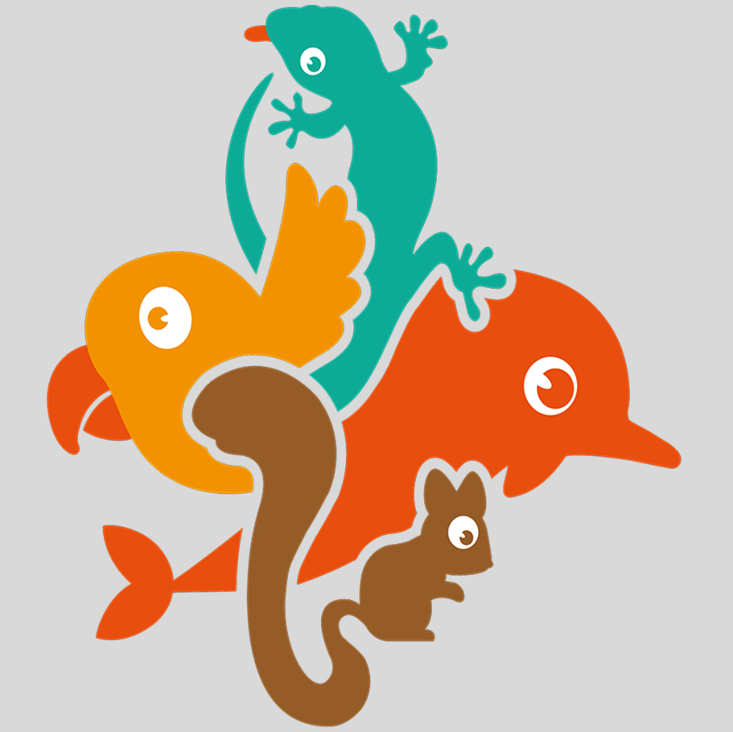
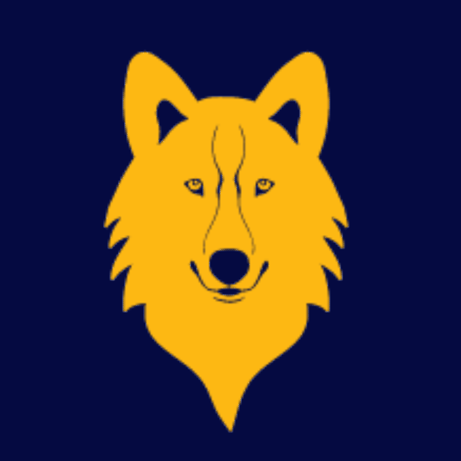
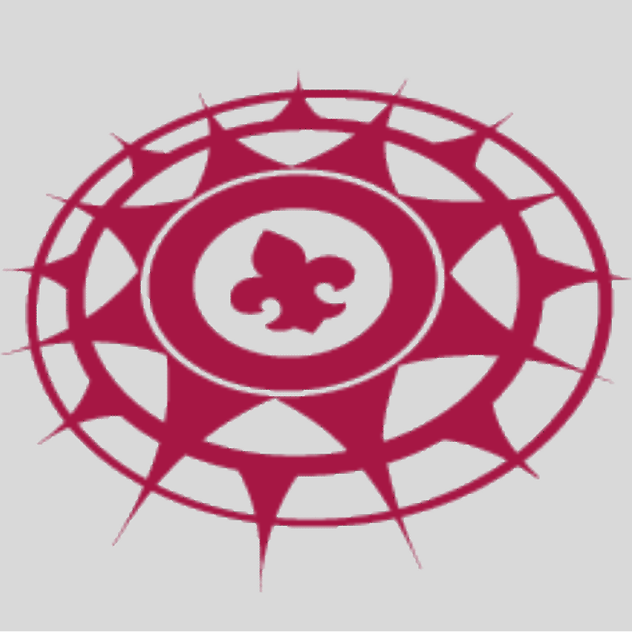

Conheça os voluntários responsáveis pela administração, formação e desenvolvimento dos jovens em cada ramo.

O Ramo Filhote é destinado a crianças de 4 anos e meio a 6 anos e meio e representa o primeiro contato com o Movimento Escoteiro, sendo uma etapa importante para o desenvolvimento inicial em um ambiente educativo, seguro e acolhedor. Nessa fase, as atividades são centradas no brincar, na imaginação e na descoberta, utilizando jogos, histórias, músicas e experiências sensoriais que respeitam o ritmo e as necessidades da infância. O objetivo é estimular habilidades como coordenação motora, comunicação, socialização e autonomia inicial, sempre de forma leve e significativa.
O método educativo do escotismo está presente de forma adaptada, com foco no “aprender fazendo” por meio de vivências práticas. As crianças são incentivadas a explorar o ambiente, desenvolver a curiosidade e compreender valores como respeito, amizade, partilha e cooperação. O contato com a natureza é introduzido de forma gradual, despertando o interesse pelo meio ambiente.
O ambiente é estruturado para garantir segurança emocional e física, favorecendo o convívio em grupo e fortalecendo vínculos com colegas e adultos voluntários. Conforme orientações da União dos Escoteiros do Brasil, é essencial que os pais ou responsáveis acompanhem as atividades quando solicitado, contribuindo para uma adaptação segura e reforçando o desenvolvimento da criança.

O Ramo Lobinho é a porta de entrada para o universo escoteiro, destinado a crianças de 6 anos e meio a 10 anos. Inspirado na obra O Livro da Selva, de Rudyard Kipling, esse ramo utiliza o simbolismo da vida em alcateia para promover o desenvolvimento infantil de forma lúdica, acolhedora e educativa.
As atividades são baseadas em histórias, jogos, canções e desafios adaptados à faixa etária, estimulando a imaginação e a criatividade. Nesse ambiente, a criança aprende valores fundamentais como amizade, respeito, cooperação, disciplina e responsabilidade. A vivência em grupo chamada de alcateia fortalece o senso de pertencimento e introduz conceitos importantes de convivência social.
O método educativo prioriza o aprender fazendo, sempre com foco no desenvolvimento integral: físico, intelectual, social, afetivo, espiritual e de caráter. As atividades ao ar livre têm papel central, permitindo que os lobinhos explorem a natureza de forma segura e divertida.
Além disso, o Ramo Lobinho incentiva a autonomia progressiva, ajudando a criança a tomar pequenas decisões, cuidar de si mesma e contribuir com o grupo. Tudo isso acontece em um ambiente protegido, com a orientação constante de adultos voluntários preparados. Mais do que uma etapa inicial, o Ramo Lobinho é fundamental na formação de valores e na construção das bases para uma vida cidadã.
O Ramo Escoteiro é voltado para jovens de 11 a 14 anos e representa uma fase de intensa descoberta, aprendizado prático e construção de identidade. Aqui, o jovem assume um papel mais ativo dentro do movimento, participando de atividades desafiadoras e desenvolvendo habilidades essenciais para a vida.
A organização em patrulhas pequenos grupos autônomos é um dos pilares desse ramo. Cada patrulha funciona como uma equipe, onde os próprios jovens exercem liderança, tomam decisões e aprendem a trabalhar em conjunto. Esse sistema fortalece o senso de responsabilidade, cooperação e protagonismo juvenil.
As atividades incluem acampamentos, trilhas, técnicas mateiras, primeiros socorros, orientação, pioneirias e projetos comunitários. Tudo é estruturado para estimular o desenvolvimento físico, intelectual e social, sempre alinhado aos valores do escotismo.
Nesse período, o jovem é incentivado a superar desafios, lidar com frustrações e desenvolver resiliência. A vivência ao ar livre continua sendo essencial, proporcionando contato direto com a natureza e promovendo consciência ambiental. O Ramo Escoteiro é uma etapa decisiva na formação do caráter, pois equilibra disciplina e liberdade, permitindo que o jovem cresça com autonomia, mas sempre guiado por princípios sólidos.

O Ramo Sênior é direcionado a jovens de 15 a 17 anos, fase marcada por grandes transformações pessoais, busca por identidade e desejo de independência. Nesse contexto, o escotismo oferece um ambiente seguro e estimulante para o desenvolvimento da autonomia e da liderança.
As atividades tornam-se mais desafiadoras e exigem maior preparo físico, emocional e técnico. Expedições, travessias, acampamentos avançados e projetos de impacto social fazem parte da rotina, incentivando o jovem a sair da zona de conforto e explorar seus próprios limites.
A organização em equipes continua sendo fundamental, mas com maior grau de autogestão. Os jovens são protagonistas das decisões, planejando atividades e assumindo responsabilidades reais. Isso fortalece competências como liderança, comunicação, trabalho em equipe e tomada de decisão.
O Ramo Sênior também valoriza fortemente o serviço à comunidade, estimulando o engajamento social e o desenvolvimento de uma consciência cidadã ativa. Essa etapa prepara o jovem para os desafios da vida adulta, ajudando-o a construir valores sólidos, senso crítico e responsabilidade social.
O Ramo Pioneiro é destinado a jovens de 18 a 21 anos e representa a fase de transição para a vida adulta. Aqui, o escotismo assume um caráter ainda mais reflexivo, autônomo e voltado para o propósito de vida.
Os pioneiros são incentivados a desenvolver projetos pessoais e coletivos que tenham impacto real na sociedade. O serviço comunitário ganha protagonismo, permitindo que o jovem aplique na prática os valores aprendidos ao longo de sua trajetória escoteira.
A autogestão é um dos princípios centrais desse ramo. Os próprios jovens organizam suas atividades, definem objetivos e conduzem suas jornadas, sempre com apoio de adultos experientes. Isso fortalece a maturidade, a responsabilidade e a capacidade de planejamento.
Além disso, o Ramo Pioneiro estimula o desenvolvimento profissional, o empreendedorismo, a cidadania ativa e o compromisso com a construção de um mundo melhor. Mais do que uma continuidade, essa etapa representa a consolidação de tudo aquilo que o escotismo propõe: formar cidadãos conscientes, líderes responsáveis e agentes de transformação social.
Junte-se ao movimento escoteiro e ajude a transformar vidas.
Seja Um Escoteiro